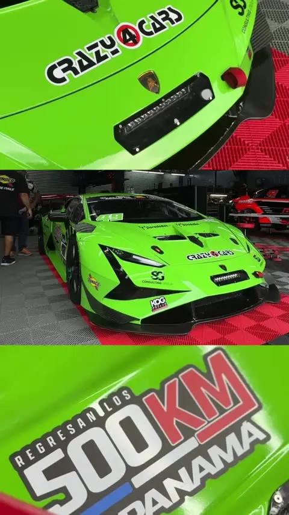
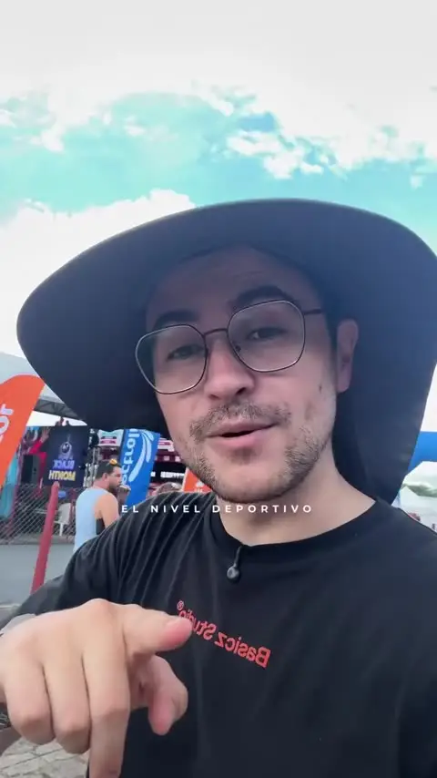
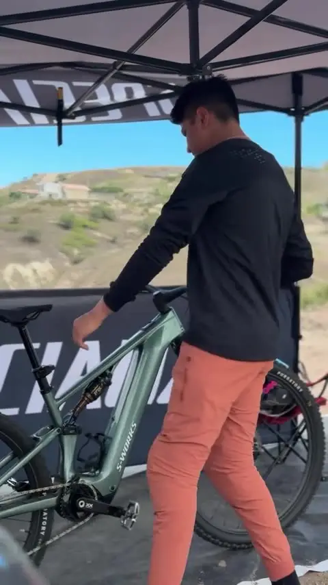
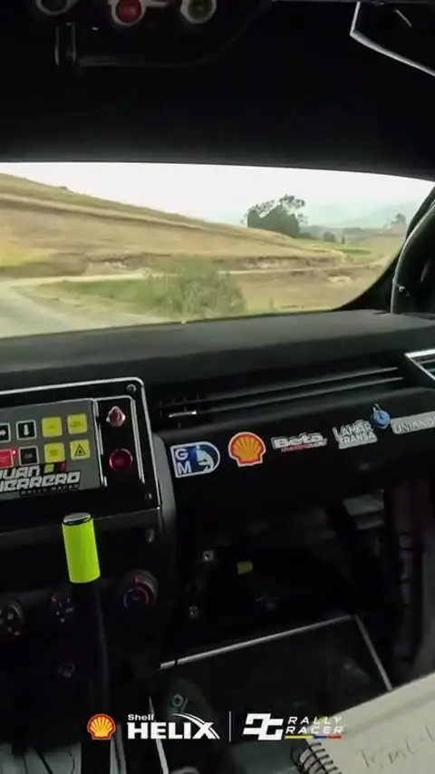
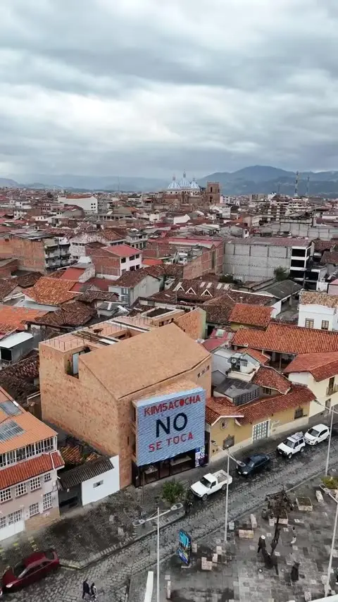
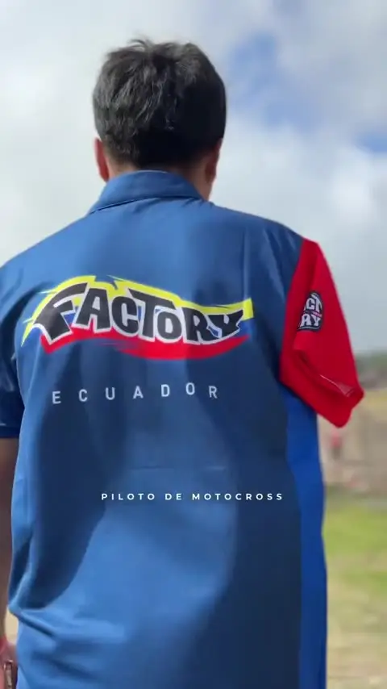
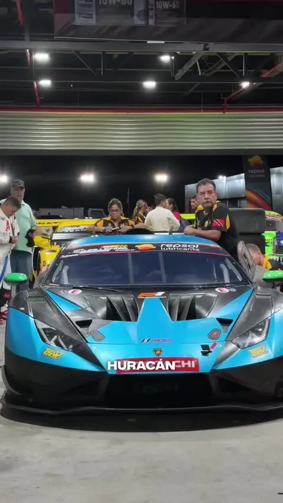
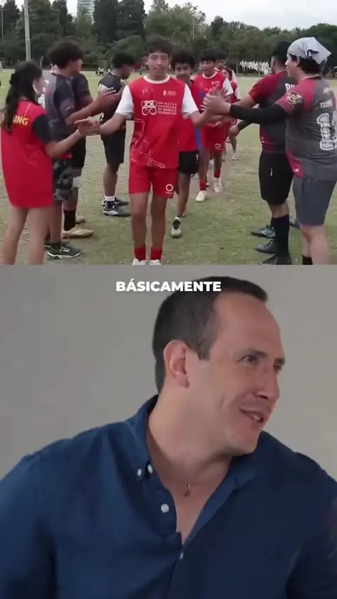
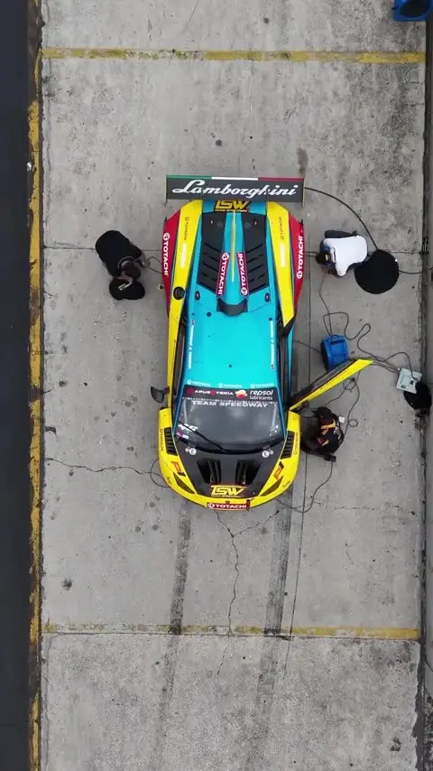

Producción y comunicación
Studio
- Video, foto y cobertura en competencia
- Narrativa e identidad de marca personal
- Media kit y dossier comercial
Convertimos el talento deportivo en propuestas comerciales que una marca puede entender, activar y medir. Para deportistas, marcas y organizadores de eventos.
Pilotos, eventos e historias que contamos. Cada video, con las reproducciones que generó.









Reproducciones en Instagram al 19 de octubre de 2026 · @pro_motion.ec
 ¿Nos
¿NosLos resultados construyen credibilidad, pero no explican qué gana una marca al vincularse contigo. Pro Motion traduce tu historia, disciplina, comunidad y calendario en una propuesta que una empresa pueda comprender, activar y medir.
Esta semana, una marca recibió 12 solicitudes. Toca los puntos:
Once piden. Una propone.
Identidad, narrativa, posicionamiento y propuesta comercial.
Contenido, campañas, experiencias, eventos y comunidad.
Alcance, interacción, entregables, resultados y aprendizajes.
Tres piezas que funcionan juntas: producimos tu historia, la conectamos con la marca correcta y te formamos para que sostengas el proceso.
Nadie firma un auspicio por una presentación: lo firma por una propuesta que puede ejecutar y medir. Toca cada escalón.
Identidad, contenido y una oferta que una marca pueda comprar.
Diseñar mi proceso »
Perfiles por afinidad, activación con producción propia y medición.
Diseñar una campaña »
Comunicación, cobertura y comercialización en cuatro momentos.
Ver cómo trabajamos »
Comunicación, concepto creativo y cobertura del campeonato GT de Latinoamérica. Cada fecha arranca con un teaser que nombra al destino antes de anunciarlo: el cactus para México, el coco para Barbados.
asistentes en Puebla · récord del campeonato
visualizaciones en la campaña de Puebla
visualizaciones en la campaña de Barbados
carrera GT profesional en la historia de Barbados
Cada perfil es un proyecto: identidad, narrativa, calendario y una oferta que una marca puede activar y medir.
 Ecuador
Ecuador
Dos años consecutivos en la final del GT Challenge de las Américas.
Ver rendimiento Cuenca
Cuenca
Más de 16 años en el automovilismo y una nueva temporada a bordo del Renault Clio Rally 3.
Ver rendimiento Ecuador
Ecuador
Integra a sus marcas de forma natural y habla a cámara con claridad.
Ver rendimiento Cañar
Cañar
Compite en motocross con un solo brazo. Su contenido llega mucho más lejos que su cuenta.
Ver rendimiento
ProMatch ordena lo que hoy vive en conversaciones sueltas: identidad, audiencia, calendario y capacidad de activación. El puntaje se explica, no se adivina: cada porcentaje corresponde a una variable declarada por ambas partes.
Alta compatibilidad en valores y territorio. Antes de cerrar, reforzar la experiencia comercial con una activación piloto de un trimestre.
Ejemplo ilustrativo de cómo se presenta una recomendación.
¿Qué perdería una marca si tú no existieras? Descubre tu arquetipo comercial.
Deja de pedir. Arma una presentación de socio comercial sin “apoyo” ni “sueño”.
Una directora de marketing te va a objetar. Practica aquí y falla aquí.
Lo que no se cuenta, no existe. Tu historia convertida en 4 semanas de contenido.
El problema no es el talento. Es la traducción. Una guía ilustrada e interactiva para identificar tu valor real.
Donde otros ven atletas, nosotros vemos historias. Donde otros ven métricas, nosotros vemos significado.
El deporte es una carrera, no un hobby. Se gestiona con excelencia empresarial.
Construimos activos propios para no depender de la burocracia ni de la suerte.
Valoramos la influencia positiva y la comunidad por encima de la vanidad.
Lo que no se cuenta no existe, pero lo que se cuenta debe ser verdad.
Cuéntanos en qué etapa estás y te devolvemos una ruta concreta, no un catálogo de precios.